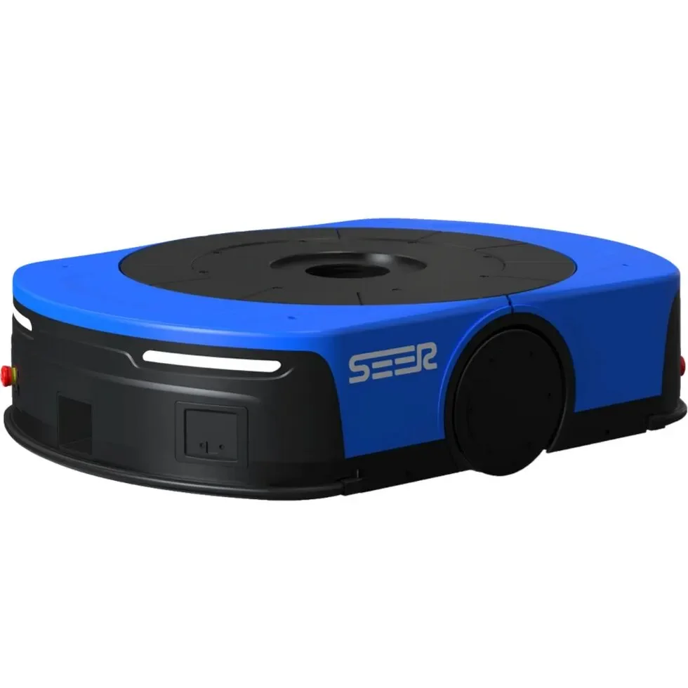

Database · Logistics Robots
SEER Robotics
SEER Robotics (仙工智能) makes AMR controllers, mobile robot platforms and fleet software that power warehouse automation across China.
AMR Controller Shanghai

Company Overview
- SEER supplies the 'brains' of AMRs — controllers and software that many integrators build robots around.
- Its SRC controller series and RoboView fleet system underpin warehouse and factory automation.
- A strategic component supplier in China's logistics-robotics boom.
Key Facts
| Full Name | Shanghai SEER Intelligent Technology Co., Ltd. |
|---|---|
| Chinese Name | 上海仙工智能科技有限公司 |
| Founded | 2016 |
| Headquarters | Shanghai |
| Core Products | SRC AMR controllers, mobile robots, fleet OS |
| Customers | Logistics, factories, integrators |
| Status | Key AMR tech provider |
Actuators & Sensors
- AMR controllers with navigation stacks.
- Mobile robot bases and racks.
- Fleet scheduling software.
Supply-Chain Analysis
- Shanghai R&D + domestic supply chain.
- Integrator-partner ecosystem.
Competitor Comparison
Competes with Geek+ and Quicktron on full robots; SEER differentiates by selling controllers/OS to other makers.